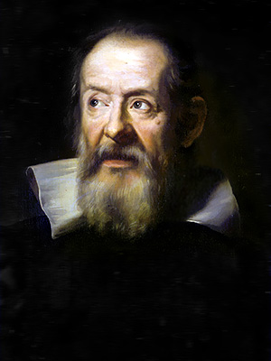
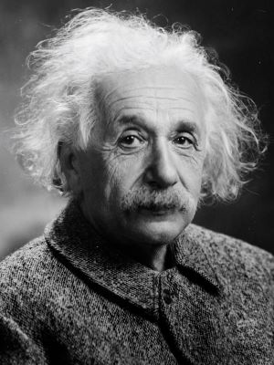
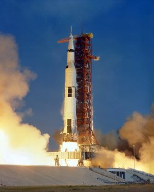

Explore Key Moments in Science
1600s
Galileo Galilei
First to use a telescope for astronomical observations.
1687
Isaac Newton
Publishes "Principia Mathematica," laying the foundation for classical mechanics.

1869
Dmitri Mendeleev
Creates the first periodic table of elements.

1905
Albert Einstein
Publishes the theory of special relativity.
1969
Apollo 11
First human moon landing by NASA astronauts.
2021
James Webb Space Telescope
Launched to explore deep space and uncover the mysteries of the universe.